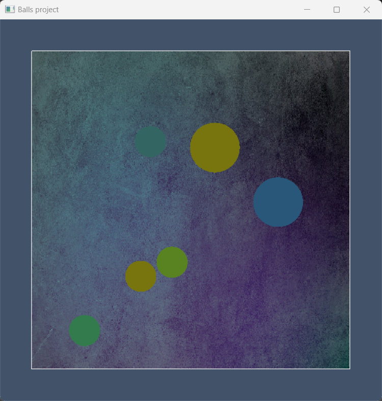
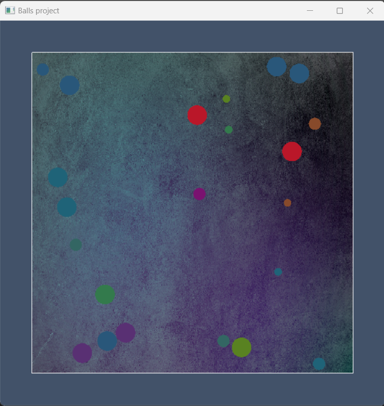
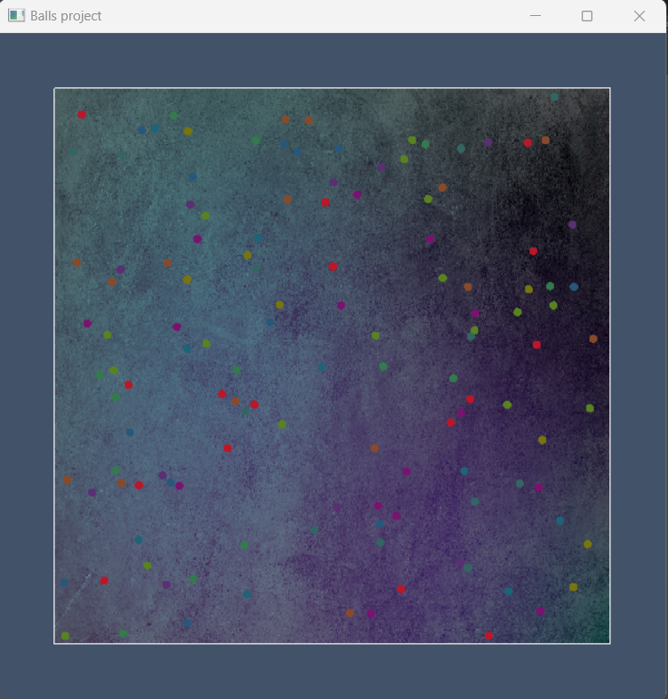

Pentru acest proiect am ales să creăm o animație 2D care implică bile în mișcare, cu ajutorul OpenGL. Am ales această idee pentru că este dinamică și plăcută vizual. Inițial animația începe cu o singură bilă ce se mișcă aleator în chenarul desenat, iar la numărul de coliziuni setat, aceasta se divide în două bile mai mici, acest procedeu repetându-se pentru fiecare bilă până se atinge raza minimă, setată la început. Am urmărit obținerea unei simulări interactive a mișcării și coliziunilor, evidențiind conceptele de fizică, matematică și grafică.
În cadrul proiectului am folosit o compunere de translație și scalare pentru a diviza bilele și a realiza mișcarea acestora cu o anumită viteză.
Bilele se mișcă într-un spațiu 2D și se ciocnesc unele cu altele și cu marginile ferestrei, respectând legile conservării impulsului și a energiei cinetice. La coliziuni, vitezele bilelor sunt calculate în funcție de masele lor pentru a asigura o coliziune elastică. Dacă o bilă a suferit un număr specific de coliziuni, se poate diviza în două bile mai mici, fiecare cu o nouă direcție de mișcare.
Utilizatorul poate configura inițial viteza și dimensiunea bilelor, precum și numărul maxim de coliziuni înainte de divizare. De asemenea, animația rulează cu o limitare a rate-ului de cadre (60 cadre pe secundă) pentru o experiență uniformă pe diferite sisteme.
Calculul Masei:
mass1 si mass2 sunt calculate folosind formula ariei unui cerc (πr²)Conservarea Impulsului si a Energie Cinetice:
Descompunerea Vitezelor:
Dinamica Coliziunii:
newDotNormal1 si newDotNormal2 calculeaza noile viteze normale folosind conservarea impulsului si faptul ca energia cinetica este conservata in coliziunile elastice.Corectia Suprapunerii:
Descompunerea Vitezei:
Noua Viteza Normala:
Conservarea Impulsului: Intr-o coliziune elastica, impulsul total al sistemului este conservat. Impulsul este produsul dintre masa si viteza unui obiect. Pentru doua bile, A si B, aceasta se poate scrie ca:
Conservarea Energiei Cinetice: In coliziuni elastice, energia cinetica totala este de asemenea conservata. Astfel, pentru sistemul nostru:
Aplicand aceste principii si rezolvand sistemul de ecuatii, obtinem formulele pentru noile viteze normale dupa coliziune:
Noua Viteza Normala pentru Bila A:
Noua Viteza Normala pentru Bila B:
Calculul Vitezei Finale:
Corectia Suprapunerii:
Aceasta functie este o aplicare practica a fizicii newtoniene intr-un context computational, fiind frecvent utilizata in dezvoltarea jocurilor si simulările fizice.
Proiectul este original prin modul în care combină concepte de fizică și matematică pentru a crea o simulare interactivă și captivantă a mișcării bilelor. Printre aspectele originale utilizate în proiect se numără interacțiunea realistă a bilelor, rate-ul de cadre stabilizat, divizarea bilelor și configurabilitatea inițială.
  
https://github.com/alexbanilean/BallsProjectOpenGL
#include <iostream>
#include <vector>
#include <time.h>
#include <windows.h>
#include <stdlib.h>
#include <stdio.h>
#include <GL/glew.h>
#include <GL/freeglut.h>
#include "loadShaders.h"
#include "glm/glm.hpp"
#include "glm/gtc/matrix_transform.hpp"
#include "glm/gtx/transform.hpp"
#include "glm/gtc/type_ptr.hpp"
#include "SOIL.h"
GLuint
VaoId,
VboId,
EboId,
DboId,
ColorBufferId,
ProgramId,
ProgramId2,
myMatrixLocation,
texture,
codColLocation,
colorLocation;
glm::mat4
myMatrix, resizeMatrix;
float xMin = -300.f, xMax = 300.f, yMin = -300.f, yMax = 300.f;
const float PI = 3.1415926;
/* Bounding box */
const glm::vec2 BOX_MIN(-250, -250);
const glm::vec2 BOX_MAX(250, 250);
/*
Initial configuration
- play around with these
- consider that if the maximal area of the objects is close to the area
of the rectagle your computer will have a bad time
*/
const float INITIAL_SIZE = 100.0f;
const float INITIAL_VELOCITY = 3.0f;
const int MAX_BOUNCES = 8;
const float DECREASE_AMOUNT = 1.6f;
const float MIN_BALL_SIZE = 4.0f;
int codCol;
std::vector<glm::vec4> possibleColors = {
glm::vec4(0.2f, 0.48f, 0.3f, 1.0f),
glm::vec4(0.53f, 0.29f, 0.17f, 1.0f),
glm::vec4(0.35f, 0.51f, 0.13f, 1.0f),
glm::vec4(0.35f, 0.19f, 0.45f, 1.0f),
glm::vec4(0.16f, 0.34f, 0.48f, 1.0f),
glm::vec4(0.12f, 0.39f, 0.47f, 1.0f),
glm::vec4(0.48f, 0.07f, 0.44f, 1.0f),
glm::vec4(0.47f, 0.46f, 0.06f, 1.0f),
glm::vec4(0.73f, 0.09f, 0.16f, 1.0f),
glm::vec4(0.20f, 0.40f, 0.39f, 1.0f),
};
class Ball {
public:
static std::vector<Ball> balls;
static std::vector<Ball> new_balls;
glm::vec2 position;
glm::vec2 velocity;
glm::vec4 color;
float size;
int bounceCount;
bool operator==(const Ball& other) const {
return position == other.position &&
velocity == other.velocity &&
color == other.color &&
size == other.size &&
bounceCount == other.bounceCount;
}
private:
/*
Elastic collisions of randomized object are slighty impredictiable especially when mass based
This computes the reflection of walls as well as pulling the ball back in frame in case it reached a speed that allowed it to fully pass
*/
void WallCollisionCheck() {
if (position.x - size < BOX_MIN.x) {
velocity.x = -velocity.x;
position.x = BOX_MIN.x + size;
bounceCount++;
}
else if (position.x + size > BOX_MAX.x) {
velocity.x = -velocity.x;
position.x = BOX_MAX.x - size;
bounceCount++;
}
if (position.y - size < BOX_MIN.y) {
velocity.y = -velocity.y;
position.y = BOX_MIN.y + size;
bounceCount++;
}
else if (position.y + size > BOX_MAX.y) {
velocity.y = -velocity.y;
position.y = BOX_MAX.y - size;
bounceCount++;
}
}
void Split() {
if (size > MIN_BALL_SIZE) {
size /= DECREASE_AMOUNT;
Ball newBall = *this;
float randomAngle = static_cast<float>(std::rand()) / RAND_MAX * 2 * PI;
glm::vec2 dir(std::cos(randomAngle), std::sin(randomAngle));
newBall.velocity = dir * glm::length(velocity);
this->velocity = -dir * glm::length(velocity);
color = possibleColors[rand() % possibleColors.size()];
newBall.color = possibleColors[rand() % possibleColors.size()];
float separationDistance = size;
this->position += dir * separationDistance;
newBall.position -= dir * separationDistance;
this->bounceCount = 0;
newBall.bounceCount = 0;
balls.push_back(newBall);
}
}
static void HandleCollisions() {
for (size_t i = 0; i < balls.size(); ++i) {
for (size_t j = i + 1; j < balls.size(); ++j) {
Ball& ball1 = balls[i];
Ball& ball2 = balls[j];
glm::vec2 diff = ball2.position - ball1.position;
float distance = glm::length(diff);
float radiusSum = ball1.size + ball2.size;
/* Check for collision */
if (distance < radiusSum) {
/* Calculate elastic collision response */
ElasticCollision(ball1, ball2, diff, distance, radiusSum);
}
}
}
}
/*
WARNING physics part
This functions calculates perfect elastic collision
of 2 objects using conservation of kinetic energy and momentum
*/
static void ElasticCollision(Ball& ball1, Ball& ball2, const glm::vec2& diff, float distance, float radiusSum) {
float mass1 = PI * ball1.size * ball1.size;
float mass2 = PI * ball2.size * ball2.size;
float totalMass = mass1 + mass2;
glm::vec2 normal = glm::normalize(diff);
glm::vec2 tangent(-normal.y, normal.x);
float dotNormal1 = glm::dot(normal, ball1.velocity);
float dotNormal2 = glm::dot(normal, ball2.velocity);
float dotTangent1 = glm::dot(tangent, ball1.velocity);
float dotTangent2 = glm::dot(tangent, ball2.velocity);
glm::vec2 tangentVelocity1 = tangent * dotTangent1;
glm::vec2 tangentVelocity2 = tangent * dotTangent2;
float newDotNormal1 = (dotNormal1 * (mass1 - mass2) + 2 * mass2 * dotNormal2) / totalMass;
float newDotNormal2 = (dotNormal2 * (mass2 - mass1) + 2 * mass1 * dotNormal1) / totalMass;
glm::vec2 newNormalVelocity1 = normal * newDotNormal1;
glm::vec2 newNormalVelocity2 = normal * newDotNormal2;
ball1.velocity = newNormalVelocity1 + tangentVelocity1;
ball2.velocity = newNormalVelocity2 + tangentVelocity2;
/* Move balls apart if they're overlapping to prevent sticking */
float overlap = (ball1.size + ball2.size) - distance;
if (overlap > 0) {
glm::vec2 separation = normal * overlap;
ball1.position -= separation * (mass2 / totalMass);
ball2.position += separation * (mass1 / totalMass);
}
ball1.bounceCount++;
ball2.bounceCount++;
}
auto inline get_position() const
{
return glm::translate(glm::mat4(1.0f), glm::vec3(position.x, position.y, 0.0f));
}
auto inline get_scale() const
{
return glm::scale(glm::mat4(1.0f), glm::vec3(size, size, 1.0f));
}
public:
void Update() {
/* Update position */
position += velocity;
WallCollisionCheck();
/* Check for split condition */
if (bounceCount >= MAX_BOUNCES) {
Split();
}
}
auto inline transform() const
{
return get_position() * get_scale();
}
static inline void SceneUpdate()
{
HandleCollisions();
const int cnt = balls.size();
/* Ensure we only call update on the balls we have, and don't recalculate for freshly spawend ones */
for (int i = 0; i < cnt; i++)
balls[i].Update();
}
};
std::vector<Ball> Ball::balls;
std::vector<Ball> Ball::new_balls;
void LoadTexture(const char* photoPath)
{
glGenTextures(1, &texture);
glBindTexture(GL_TEXTURE_2D, texture);
glTexParameteri(GL_TEXTURE_2D, GL_TEXTURE_WRAP_S, GL_CLAMP_TO_EDGE);
glTexParameteri(GL_TEXTURE_2D, GL_TEXTURE_WRAP_T, GL_CLAMP_TO_EDGE);
glTexParameteri(GL_TEXTURE_2D, GL_TEXTURE_MIN_FILTER, GL_NEAREST);
glTexParameteri(GL_TEXTURE_2D, GL_TEXTURE_MAG_FILTER, GL_NEAREST);
int width, height;
unsigned char* image = SOIL_load_image(photoPath, &width, &height, 0, SOIL_LOAD_RGB);
if (!image) {
std::cerr << "Error loading image: " << SOIL_last_result() << "\n";
return;
}
glTexImage2D(GL_TEXTURE_2D, 0, GL_RGB, width, height, 0, GL_RGB, GL_UNSIGNED_BYTE, image);
glGenerateMipmap(GL_TEXTURE_2D);
SOIL_free_image_data(image);
glBindTexture(GL_TEXTURE_2D, 0);
}
void CreateVBO(void)
{
GLfloat Vertices[] = {
BOX_MIN.x, BOX_MIN.y, 0.0f, 1.0f, 1.0f, 1.0f, 1.0f, 0.0f, 0.0f,
BOX_MAX.x, BOX_MIN.y, 0.0f, 1.0f, 1.0f, 1.0f, 1.0f, 1.0f, 0.0f,
BOX_MAX.x, BOX_MAX.y, 0.0f, 1.0f, 1.0f, 1.0f, 1.0f, 1.0f, 1.0f,
BOX_MIN.x, BOX_MAX.y, 0.0f, 1.0f, 1.0f, 1.0f, 1.0f, 0.0f, 1.0f
};
/* Indices for vertex order */
static const GLuint Indices[] =
{
0, 1, 2, 3,
0, 1, 2, 0, 3, 2
};
/* Generate circle vertices */
std::vector<GLfloat> CircleVertices;
for (int ii = 0; ii < 180; ii++) {
float theta = 2.0f * PI * float(ii) / float(180);
float x = cosf(theta);
float y = sinf(theta);
CircleVertices.push_back(x);
CircleVertices.push_back(y);
}
/* Bind VAO(Vertex Array Object) */
glGenVertexArrays(1, &VaoId);
/* Common buffer for vertices - coordinates, colors and texture coordinates */
glGenBuffers(1, &VboId);
glBindBuffer(GL_ARRAY_BUFFER, VboId);
glBufferData(GL_ARRAY_BUFFER, sizeof(Vertices), Vertices, GL_STATIC_DRAW);
/* Indices buffer */
glGenBuffers(1, &EboId);
glBindBuffer(GL_ELEMENT_ARRAY_BUFFER, EboId);
glBufferData(GL_ELEMENT_ARRAY_BUFFER, sizeof(Indices), Indices, GL_STATIC_DRAW);
/* Circle vertices buffer */
glGenBuffers(1, &DboId);
glBindBuffer(GL_ARRAY_BUFFER, DboId);
glBufferData(GL_ARRAY_BUFFER, sizeof(GLfloat) * CircleVertices.size(), &CircleVertices[0], GL_STATIC_DRAW);
}
void DestroyVBO(void)
{
glDisableVertexAttribArray(1);
glDisableVertexAttribArray(0);
glBindBuffer(GL_ARRAY_BUFFER, 0);
glDeleteBuffers(1, &VboId);
glDeleteBuffers(1, &EboId);
glDeleteBuffers(1, &DboId);
glBindVertexArray(0);
glDeleteVertexArrays(1, &VaoId);
}
void CreateShaders(void)
{
ProgramId = LoadShaders("rectangle.vert", "rectangle.frag");
ProgramId2 = LoadShaders("circles.vert", "circles.frag");
glUseProgram(ProgramId);
}
void DestroyShaders(void)
{
glDeleteProgram(ProgramId);
glDeleteProgram(ProgramId2);
}
void Initialize(void)
{
/* Screen background color */
glClearColor(0.26f, 0.32f, 0.41f, 1.0f);
CreateVBO();
CreateShaders();
/* Bind texture */
LoadTexture("background_texture.png");
glActiveTexture(GL_TEXTURE0);
glBindTexture(GL_TEXTURE_2D, texture);
myMatrixLocation = glGetUniformLocation(ProgramId, "myMatrix");
codColLocation = glGetUniformLocation(ProgramId, "codCol");
resizeMatrix = glm::ortho(xMin, xMax, yMin, yMax);
/* Create initial ball */
Ball ball;
ball.position = glm::vec2(0.0f, 0.0f);
float randomAngle = static_cast<float>(std::rand()) / RAND_MAX * 2 * PI;
glm::vec2 dir(std::cos(randomAngle), std::sin(randomAngle));
ball.velocity = dir * INITIAL_VELOCITY;
ball.color = possibleColors[2];
ball.size = INITIAL_SIZE;
ball.bounceCount = 0;
Ball::balls.push_back(ball);
}
void RenderFunction(void)
{
glClear(GL_COLOR_BUFFER_BIT);
/* Compute transformation matrix and send it to shader*/
myMatrix = resizeMatrix;
glUniformMatrix4fv(myMatrixLocation, 1, GL_FALSE, &myMatrix[0][0]);
/* Bind buffers and load data */
glBindBuffer(GL_ARRAY_BUFFER, VboId);
glBindBuffer(GL_ELEMENT_ARRAY_BUFFER, EboId);
glEnableVertexAttribArray(0);
glVertexAttribPointer(0, 4, GL_FLOAT, GL_FALSE, 9 * sizeof(GLfloat), (GLvoid*)0);
glEnableVertexAttribArray(1);
glVertexAttribPointer(1, 3, GL_FLOAT, GL_FALSE, 9 * sizeof(GLfloat), (GLvoid*)(4 * sizeof(GLfloat)));
glEnableVertexAttribArray(2);
glVertexAttribPointer(2, 2, GL_FLOAT, GL_FALSE, 9 * sizeof(GLfloat), (GLvoid*)(7 * sizeof(GLfloat)));
/* Send color to shader */
glUniform1i(glGetUniformLocation(ProgramId, "backgroundTexture"), 0);
/* Activate texture in shader */
codCol = 1;
glUniform1i(codColLocation, codCol);
/* Draw the rectangle */
glDrawElements(GL_POLYGON, 4, GL_UNSIGNED_INT, (void*)(0));
codCol = 0;
glUniform1i(codColLocation, codCol);
glDrawElements(GL_LINE_LOOP, 4, GL_UNSIGNED_INT, (void*)(0));
/* Bind the circle shader */
glUseProgram(ProgramId2);
myMatrixLocation = glGetUniformLocation(ProgramId2, "myMatrix");
colorLocation = glGetUniformLocation(ProgramId2, "circleColor");
/* Balls rendering */
for (const Ball& ball : Ball::balls) {
/* Compute transformation matrix and send it to shader*/
myMatrix = resizeMatrix * ball.transform();
glUniformMatrix4fv(myMatrixLocation, 1, GL_FALSE, &myMatrix[0][0]);
/* Send color to shader */
glUniform4f(colorLocation, ball.color[0], ball.color[1], ball.color[2], ball.color[3]);
/* Bind the circle buffer */
glBindBuffer(GL_ARRAY_BUFFER, DboId);
glEnableVertexAttribArray(0);
glVertexAttribPointer(0, 2, GL_FLOAT, GL_FALSE, 0, NULL);
/* Draw the circle */
glDrawArrays(GL_TRIANGLE_FAN, 0, 180);
}
/* Bind the rectangle shader */
glUseProgram(ProgramId);
myMatrixLocation = glGetUniformLocation(ProgramId, "myMatrix");
codColLocation = glGetUniformLocation(ProgramId, "codCol");
/* Update the scene */
Ball::SceneUpdate();
glutSwapBuffers();
glFlush();
}
void Cleanup(void)
{
DestroyShaders();
DestroyVBO();
}
void TimerFunction(int value)
{
/*
Fix 60 fps since computation is done on every frame we want it to look
similar on different speed machine and don't consume excesive CPU time
*/
glutPostRedisplay();
glutTimerFunc(1000 / 120, TimerFunction, 0);
}
int main(int argc, char* argv[])
{
/* Initialize random seed */
srand(static_cast<unsigned>(time(nullptr)));
glutInit(&argc, argv);
glutInitDisplayMode(GLUT_DOUBLE | GLUT_RGB);
glutInitWindowSize(600, 600);
glutInitWindowPosition(400, 100);
glutCreateWindow("Balls project");
glewInit();
/* Register the timer function */
glutTimerFunc(0, TimerFunction, 0);
Initialize();
glutDisplayFunc(RenderFunction);
glutCloseFunc(Cleanup);
glutMainLoop();
}
#version 330 core
/* Coordinates */
layout (location = 0) in vec4 in_Position;
/* Colors */
layout (location = 1) in vec4 in_Color;
/* Texture coordinates */
layout (location = 2) in vec2 texCoord;
/* Updated position */
out vec4 gl_Position;
/* Send to rectangle.frag */
out vec4 ex_Color;
out vec2 tex_Coord;
/* Uniform variable */
uniform mat4 myMatrix;
void main(void)
{
gl_Position = myMatrix * in_Position;
ex_Color = in_Color;
tex_Coord = vec2(texCoord.x, 1-texCoord.y);
}
#version 330 core
in vec4 ex_Color;
in vec2 tex_Coord;
/* Updated color */
out vec4 out_Color;
/* Uniform variables */
uniform vec4 circleColor;
uniform sampler2D backgroundTexture;
uniform int codCol;
void main(void)
{
switch(codCol)
{
case 0:
out_Color = ex_Color;
break;
case 1:
out_Color = texture(backgroundTexture, tex_Coord);
break;
default:
break;
}
}
#version 330 core
/* Coordinates from button */
layout (location = 0) in vec4 in_Position;
/* Updated position */
out vec4 gl_Position;
/* Uniform variable */
uniform mat4 myMatrix;
void main(void)
{
gl_Position = myMatrix * in_Position;
}
#version 330 core
/* Updated color */
out vec4 out_Color;
/* Uniform variable */
uniform vec4 circleColor;
void main(void)
{
out_Color = circleColor;
}